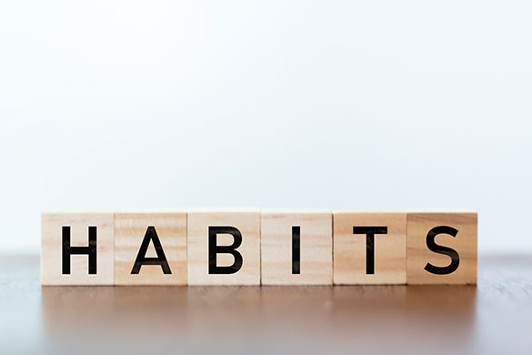

So basically the goal of our website is to help the teens and young adults of today's generation fight the problem of bad wellbeing, Our website is going to do this because in order to achive sustainablity both socially, economically and environmentally one has to perform good habits. This is the main reasons why the website which is being made is planned to help the users build new habits in many different creative ways. There are more details about the features the site has to offer below. Accoding to many socurce as of 2022 teens on an average are apending about 3-4 hours on social media sites and due to the rise of different tech companies like facebook and snapchat they are keeping more features like recommendation to keep the users in their platform for longer. This has led to increase in social media screen time which decreased the time youth spend on outdoor activities and gaining knowledge. This is why the creator of this solution has made a goal to spread awareness about the problem and create digital solutions to solve them. The fastfood chains like McDonalds and many other IT food companies like Zomato are also involved with this rise in problem because they are making their solutions in such a way that people are more and more likely to order something because of the contant ads and messages the companies give, this also has increased obisity in this decade and this has increased the risks of many problems like heart blockage, high blood pressure, diebeties, cancer, breathing problems, back pains and the list never ends. We are surrounded in such a place where every company or organization wants to take advantage of our health because of this it is important to create habits in such a way so that one can avoid all these problems.
